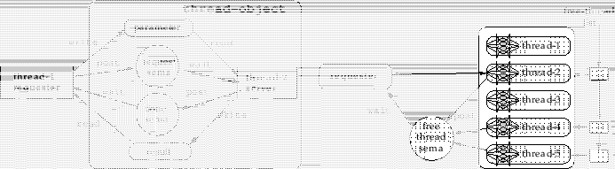

Solarisにおいて複数のプロセッサ上で並列にプログラムを実行するためには、
そのプログラムは関数の集まりとして書かれる必要がある。
その関数はそれぞれプロセスの中で動的に作成されるスレッドによって
実行される。
スレッドを作成するために要求される時間は、プロセスを作成するよりも
速くなければならないが、スタックを配置しスタックのオーバーフローを
発見するためのページ属性を設定した後にスレッドが動き始めるまでに
Euslispにおいて数ミリ秒かかる。
この遅れは関数実施と比較して我慢できないため、
評価時間におけるシステムコールに対する所要時間を排除する目的で、
あらかじめmake-thread関数により十分な数のスレッドが作られ、
システムのスレッドプールに置かれる。
スレッドプールの中のそれぞれのスレッドは、図7で示されるように
スレッドIDと同期のためのセマフォと引き数や評価結果を転送するためのスロット
から構成されるスレッドオブジェクトにより表現される。
Figure:
スレッド間で制御やデータを受け渡すためのスレッドオブジェクト（左）とスレッドプール内に置かれたスレッドの集まり（右）
|  |
2016-03-23